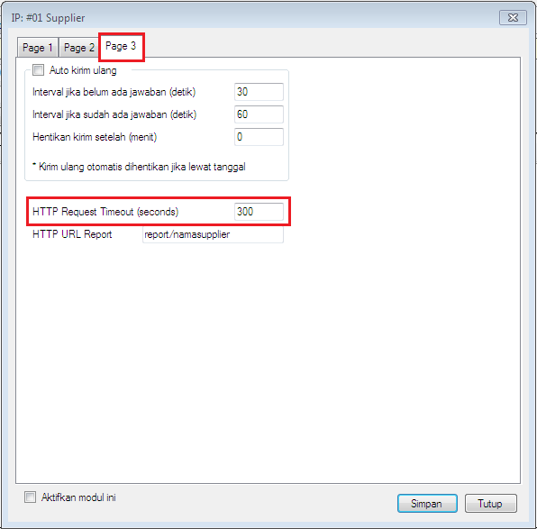

HTTP Request Timeout
Di versi sebelumnya, berapapun lama respon balasan transaksi IP dari supplier, OtomaX akan senantiasa menunggu menjaga koneksi sampai dapat respon, hal ini tentu akan mengganggu performa server jikalau dalam jangka waktu lama tidak kunjung mendapat respon dan terdapat banyak transaksi. Oleh karenanya, di versi 4.0.0 ditambahkan fitur baru bernama HTTP Request Timeout di modul IP Client OtomaX, berguna untuk membatasi berapa lama permintaan koneksi transaksi IP akan ditunggu mendapatkan respon balasan dari supplier, apabila melebihi maka koneksi transaksi dinyatakan Timeout.
Fitur ini berada di modul IP Client -> klik kanan -> pilih Setting -> pilih Page 3, perhatikan gambar di bawah ini:

Dengan menentukan HTTP Request Timeout misalnya 300, ilustrasinya IP Sedoter berkata kepada IP Supplier: Hai IP Supplier, aku akan menunggu respon balasan darimu selama 300 detik, jika lebih, maka akhiri saja koneksi transaksi IP ku ini, dan melanjutkan koneksi transaksi IP yang lain. Dan akhirnya koneksi transaksi IP Timeout bila dalam rentang waktu tersebut ternyata IP Supplier tidak memberikan respon balasan.
Fitur ini sangat berguna dikala server supplier sedang gangguan atau kejadian sejenis yang mengakibatkan tidak memberi respon balasan. Server kita bisa segera dapat kepastian status koneksi transaksi IP dan tidak terganggu performanya. Kemudian, jika Anda memiliki pertanyaan silahkan kirimkan melalui email ke support@otomax-software.com.